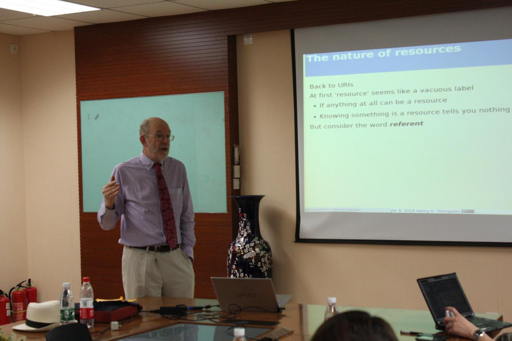

On April 29th, Professor Henry S. Thompson from University of Edinburgh was invited to give a talk on URIs in data to the faculty and students in Beihang.
His talk began with the question: Does a URI always identify the document you can retrieve from it, or does it sometimes identify what that document is about? His talk proposed instead to improve interoperability by standardizing meta-documentation, without taking a position on any of the underlying debates about standards or terminology.
Professor Henry S. Thompson received his Ph.D. in Linguistics from the University of California at Berkeley in 1980. His university education was divided between Linguistics and Computer Science, in which he holds an M.Sc. While still at Berkeley he was affiliated with the Natural Language Research Group at the Xerox Palo Alto Research Center, where he participated in the GUS and KRL projects. His research interests have ranged widely, including natural language parsing, speech recognition, machine translation evaluation, modelling human lexical access mechanisms, the fine structure of human-human dialogue, language resource creation and architectures for linguistic annotation. His current research is focussed on the semantics of markup, XML pipelines and more generally understanding and articulating the architectures of the Web.
He was a member of the SGML Working Group of the World Wide Web Consortium which designed XML, a major contributor to the core concepts of XSLT and W3C XML Schema and is currently a member of the XML Core and XML Processing Model Working Groups of the W3C. He was elected five times to the W3C TAG (Technical Architecture Group), from which he recently stepped down. He was lead editor of the Structures part of the XML Schema W3C Recommendation, for which he co-wrote the first publicly available implementation, XSV. From 2002 through 2010 he was a member of the technical staff of the World Wide Web Consortium (W3C), where he worked in the XML Activity. He has presented many lectures, papers and tutorials on SGML, DSSSL, XML,XSLT, XML Schema, XML Pipelines and Web Architecture in both industrial and public settings over the last sixteen years.
